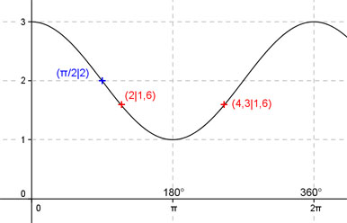

Aufgabe 192
Ergänzen Sie die Wertetabelle für x zwischen 0 und 2π:
y = cos(x) + 2
x π/2 2 oder 4,3
y 2 1,6
Amplitude = 1 ; Periode = 2π ;
cos (x) um 2 Einheiten nach oben verschoben
Berechnung der Nullstellen:
cos(x) + 2 = 0 |-2 -->
cos x = -2 -->
cos x kann nicht kleiner werden als - 1,
deswegen existiert keine Lösung und damit
keine Nullstelle.

Funktionswert an einer Stelle x ermitteln:
x = π/2
f(π/2) = cos (π/2) + 2 = cos (90°) + 2 = 2.
Berechnung der x-Werte für y = f(x) = 1,6:
f(x) = 1,6 eingesetzt,existiert zwischen
0 und π bzw. zwischen 0° und 180°
und zwischen π und 2π bzw. 180° und 360°.
cos(x) + 2 = 1,6 |-2 -->
cos x = -0,4 -->
x = arc cos (-0,4) = 2 -->
2 * 180°
x1 = 2 oder ---------- = 114,6°
π
x2 = (2π - 2) = 4,3 oder 246,4° gerundet.
(siehe Einheitskreis).